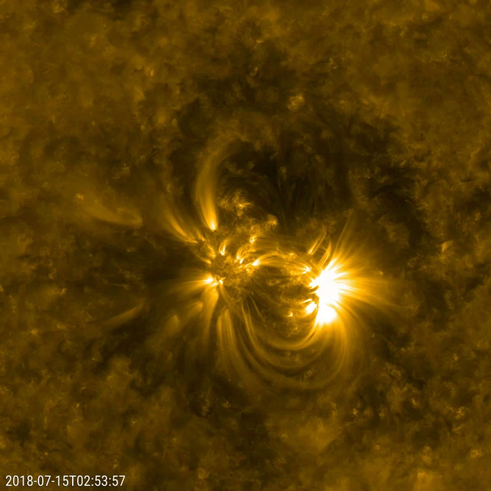
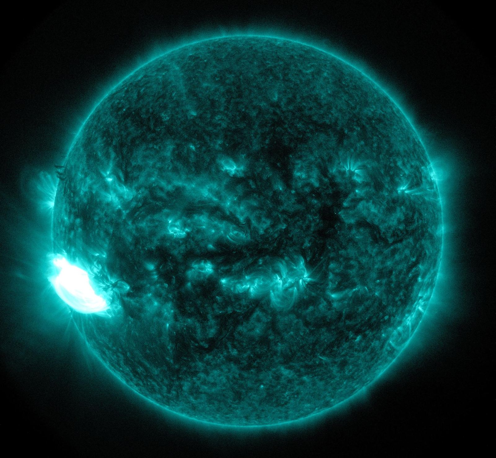
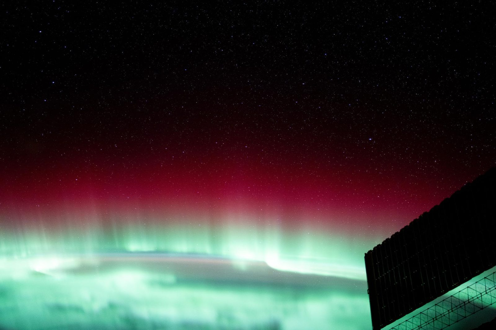
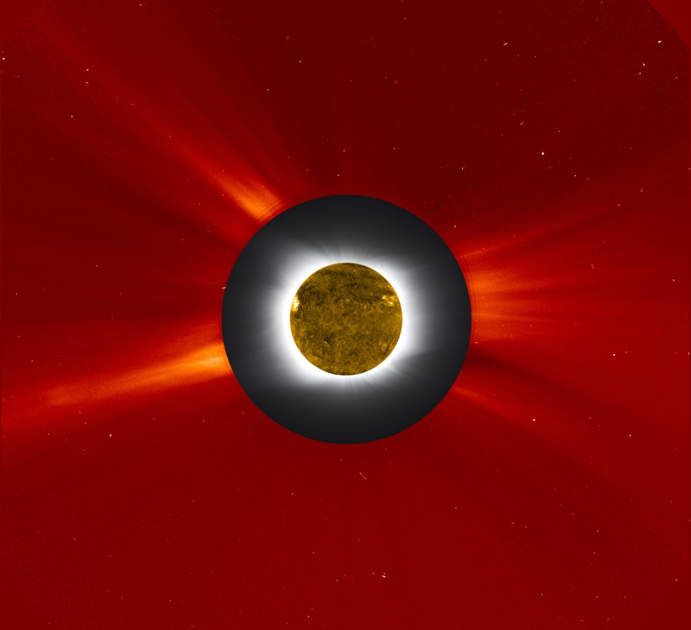

The star that governs every world
Heliophysics is the science of the Sun and the space weather it drives, solar dynamics, the corona, flares and eruptions, and the vast heliosphere that envelops the planets. SSAI studies how the solar wind meets the upper atmosphere, and supports the missions and data systems that help predict solar activity before it reaches Earth.
A star, read as a system
SSAI studies the interaction of the solar wind with the upper atmosphere and the science of space weather, understanding and predicting solar activity and its interaction with Earth's magnetic field. The Sun is not a constant; it breathes in an eleven-year rhythm, flares without warning, and hurls plasma across the solar system at millions of miles an hour.
Our role sits where that physics becomes consequence. We help turn solar observations into forecasts that protect aircrews, satellites, power grids, and astronauts, and we study the Sun's slow variation as a fundamental forcing of Earth's climate. The view of the Sun is only the beginning; the value is in the distance traveled to a trusted prediction.
A surface in constant revolt
Seen in extreme ultraviolet light, the Sun is a churning magnetic engine. Active regions knot the field into tangled loops; cooler clouds of plasma, prominences, hang suspended above the limb until the field gives way and flings them into space. The most violent of these events, X-class flares, release energy that crosses the void in minutes and arrives as a wave of radiation and charged particles.
SSAI scientists work with the observations that capture this behavior, helping translate raw solar imagery and measurement into the parameters that drive forecasting and research, the first step in seeing a storm before it reaches us.

NASA/JPL-Caltech (Solar Dynamics Observatory)
NASA/Goddard Space Flight Center (Solar Dynamics Observatory) NASA/JPL-Caltech (Solar Dynamics Observatory)
NASA/JPL-Caltech (Solar Dynamics Observatory)
From the core to the corona
Energy born in the Sun's core takes thousands of years to reach the surface, then crosses to Earth in eight minutes of light, and days of plasma. SSAI's heliophysics work follows that chain outward, from solar dynamics to the space-weather effects felt across the solar system.
When the Sun's weather reaches us
Solar activity does not stay at the Sun. Flares, coronal mass ejections, and the steady solar wind sweep outward through the heliosphere and slam into Earth's magnetic field. The consequences are real: disrupted radio and GPS signals, hazards to satellites and power grids, elevated radiation for high-altitude aircrews, and, at the gentler end, the auroras that ring the poles.
Understanding and predicting this interaction is the heart of space-weather science. SSAI contributes to the observation, modeling, and data systems that turn solar measurements into the forecasts agencies and operators depend on.
Flares & eruptions
Flares and coronal mass ejections release radiation and billions of tons of magnetized plasma, the upstream events that space-weather forecasting works to detect and characterize first.
Solar wind & heliosphere
A continuous stream of charged particles fills the heliosphere, carrying the Sun's magnetic field past every planet and setting the conditions a storm travels through.
Earth's response
Where the solar wind meets Earth's magnetic field, the upper atmosphere lights up, driving auroras, geomagnetic storms, and the radiation environment SSAI science helps quantify.
The aurora is the forecast made visible
When charged particles from the Sun funnel down Earth's magnetic field lines and excite the upper atmosphere, the result is the aurora, the same physics that disrupts satellites and grids, rendered as light. Watching the poles glow is, in a sense, watching space weather arrive.
For the operators who keep aircraft, spacecraft, and infrastructure safe, the goal is to see that arrival coming. SSAI's work supports the measurement and modeling that turn the Sun's behavior into actionable warning.

NASA/Johnson Space Center (ISS Expedition 72)The science behind the warning
SSAI supports the development and operations of NAIRAS, the Nowcast for Aerospace Ionizing Radiation System, developed at NASA Langley, which computes in real time the radiation experienced by the crews of aircraft and spacecraft from galactic cosmic rays, solar energetic particles, and the radiation belts. It is space-weather science with an immediate, human stake: keeping people safe in flight.
We also study variations in total solar irradiance as a fundamental forcing of Earth's climate system, connecting heliophysics back to the Earth science that is SSAI's largest practice. The Sun is the ultimate boundary condition for our planet, and tracking its output is part of understanding climate over the long term.
NAIRAS
SSAI supports the development and operations of the Nowcast for Aerospace Ionizing Radiation System, computing, in real time, the radiation dose from galactic cosmic rays, solar energetic particles, and the radiation belts for aircraft and spacecraft crews.
Developed at NASA LangleyTotal solar irradiance
We study variations in the Sun's energy output as a fundamental forcing of Earth's climate system, the heliophysics measurement that anchors long-term climate understanding.
Heliophysics ↔ Earth science- Studying the interaction of the solar wind with Earth's upper atmosphere.
- Supporting space-weather nowcasting for aerospace ionizing radiation through NAIRAS.
- Tracking total solar irradiance as a driver of Earth's climate system.
- Advancing the understanding and prediction of solar activity and its coupling to Earth's magnetic field.
A million-degree crown
The Sun's outer atmosphere, the corona, burns hundreds of times hotter than the surface below it, a paradox at the center of heliophysics. It is the corona that launches the solar wind and stages the great eruptions, and it is the corona that briefly reveals itself to the naked eye only during a total eclipse, when the Moon masks the blinding disk.
Studying this faint, structured outer atmosphere, through coronagraphs that create artificial eclipses and through eclipse science on the ground, is how researchers connect what happens at the Sun to what arrives at Earth.

NASA/Goddard Space Flight Center (SOHO/LASCO; Williams College Expedition)